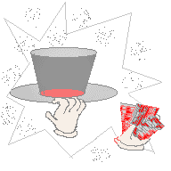

The Abracadabra Kid -- A Writer's Life
by Sid Fleischman
Sid Fleischman's autobiography worked magic for us! From his childhood fascination
with legerdemain, his association with magic clubs and vaudeville shows, to taking his own
act on the road (at 16), comes forth an enchanting story . It inspires
future writers (I gave it to my daughter) and is filled with hints to develop story
writing. Sorry, the secrets for the magic tricks were not disclosed.
After reading The Abracadabra Kid, we were compelled to check out Sid
Fleischman's books for children. I presented Humbug Mountain (riding
riverboats in the old west) and The Ghost in the Noonday Sun (with ghosts,
pirates and treasure) to Robert, my 10 -year- old son who "hated to read".
Sid Fleischman is now Robert's favorite author. We are scouring stores for a shiner
so he can cheat at cards (smile)! We've read aloud Mr. Mysterious and Company , The
Whipping Boy (Newbery medal winner) and Jim Ugly. You can't go wrong with these
books; they are hilarious, light-hearted, and ironic. Sid Fleischman is a master
of similes and metaphors. Enjoy comedy tonight!
FROM ROBINSON'S-AMAZON.COM BOOKSTORE:
The Abracadabra Kid -- A Writer's Life
Click here to
order
Sid Fleischman's autobiography is available at an amazing price! ORDER
TODAY!
This was Sid Fleischman's first children's book! Sid Fleischman modeled the characters
after his children and used their ideas in writing this book. It is a wonderful story
about a magician and his family in the old west, travelling to California to settle down.
Find out about a new holiday your family may celebrate: Abracadabra Day! I read
this book to four homeschoolers, ages 7-13 and it brightened their days.
Mr. Misterio Y Cia (Spanish edition, special order) Click here to
order
An interesting story, for which Sid Fleischman won the Newbery Award, however, it was
rather simplistic and we enjoyed his other books more.
Jim Ugly is a dog who helps a young boy unravel the mystery of why his father
disappeared.